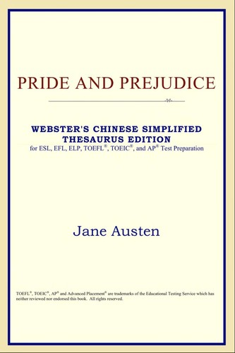

《查令十字街84号》
这是一本书信小说，讲述了一位纽约女作家与一家位于英国伦敦查令十字街84号的小书店之间的故事。小书店店主与女作家之间的信件往来，慢慢的演变成一段长达20多年的深厚友谊。

《傲慢与偏见》
在这本小说中，简·奥斯汀以幽默和机智的方式，讲述了英国社会中阶层观念和男女之间的关系。她的小说风格冷峻，观察敏锐，对当时英国社会的价值观表现出不屈不挠的坚持。
《红楼梦》
这部小说将中国古代文学推上了新高峰。曹雪芹的文学才华在其中展露无疑，以及对封建道德观念和人情世故的深刻理解。在这个故事中，作者讲述了一个富家小姐贾宝玉，在奢侈和封建的世界里经历了一系列人生的挫折。
《简·爱》
这是一本19世纪英国小说，讲述了女主角简·爱经历的不同阶段。夏洛蒂·勃朗特带领读者探究了关于阶级、性别和人性等经典主题。这本小说被认为是英国文学史上最好的小说之一。
《了不起的盖茨比》
这是一部20世纪美国文学的代表作品。弗·斯科特·菲茨杰拉德的笔触轻盈，散发出无尽的智慧和灵感。主人公盖茨比仿佛是不切实际与现实之间的生动缩影。在小说中，他们都被描绘成追逐自己的梦想，但最终与现实的冲突不断，令人无奈。

《百年孤独》
加西亚·马尔克斯的这本小说延续了拉丁美洲文学的辉煌传统。它的叙述方式非常独特，故事情节发生在一个虚构的小镇上，讲述了布恩地亚家族七代人的故事，代表着一个时代、一种人、一种文化的象征。